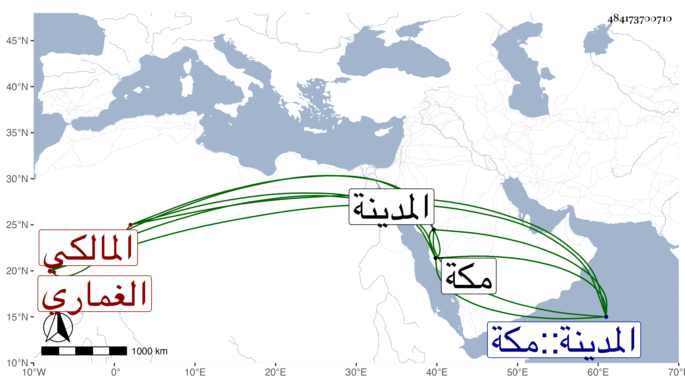

0902Sakhawi.DawLamic.ITO20230111-ara1.EIS1600.484173700710
Biography ID: 484173700710
810
داود بن موسى ويقال ابن علي الغماري المالكي . عني بالعلم ثم لازم العبادة وتزهد وجاور بالحرمين أزيد من عشرين سنة وكانت إقامته بالمدينة أكثر منها بمكة . مات في مستهل المحرم سنة عشرين ، قاله شيخنا في أنبائه ، وذكره الفاسي في مكة فقال : نزيل الحرمين عني في شبابه بفنون من العلم وتنبه في ذلك وصار على ذهنه فوائد ونكت حسنة يذاكر بها ثم أقبل على التصوف والعبادة وجد فيها كثيرا ، وسكن الحرمين نحو عشرين سنة أكثرها بالمدينة حتى كانت وفاته بها وأظنه في عشر الستين . وله بمكة ابنة وملك . وكان كثير الأمر بالمعروف والنهي عن المنكر ، وله في ذلك إقدام على الولاة وغيرهم وبيننا مودة ومحبة رحمه الله .
